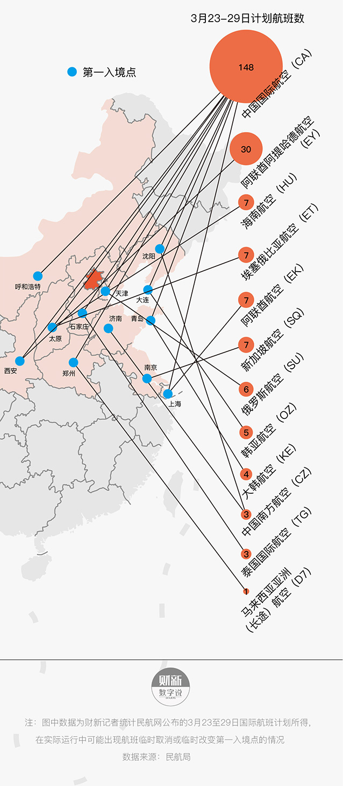

境外输入病例
30天从哪儿来？到哪儿去？
归国之路几多曲折？
自2月26日报告首例境外输入病例起，中国国内已累计报告输入病例649例。
一个月以来，境外输入病例累计和当日新增均呈增长之势。随着各国收紧疫情防控政策，海外国人回国航班中转次数越来越多。为从源头上遏制境外输入病例持续增长，3月26日，中国民航局发文减少国际航班数量。海外华人归国之路，将更显曲折艰辛。
新冠疫情海外燎原，欧洲、美国疫情持续升级，越来越多的华人选择在这一严峻时刻回国。随着归国人士增多，中国境外输入病例也在最近一个月来飙升。本已趋于可控的本土疫情再次敲响警钟，北上广等人口流动性大的省份及地区面临新挑战。

中国境外输入病例飙升
2月26日，宁夏通报第一例境外输入病例。该病例由伊朗输入，经莫斯科、上海、兰州三次中转，最终达到宁夏。
此后的一个月，中国各地本土新增确诊病例基本清零，境外输入病例成为防疫新挑战。从3月18日开始，日新增境外输入病例均超过30例。
截至3月27日24时，国家卫健委通报中国各地累计报告新冠肺炎境外输入确诊病例达到649例，其中超过60%在北京、上海、广东三地。北京以累计156例位居首位，上海146例第二，广东115例第三。
中国境外输入病例从哪儿来？到哪儿去？
财新记者梳理境外输入病例数据发现，回到中国后确诊的病例，主要来自目前疫情最为严重的美国、欧洲及伊朗。截至3月27日，输入中国病例数超过30例的国家有英国、美国、西班牙、意大利、伊朗、法国及菲律宾，这7个国家中，除了菲律宾，本土累计的新冠确诊病例均超过1万例。
中国境外输入病例大多来自疫情严重的国家
值得注意的是，菲律宾以外的6国中，英国输入的确诊病例远高于其他国家，达到192例，比位于第二的美国（93例）多了1倍。但目前英国本地的累计确诊病例远低于美国、意大利、西班牙等国。
英国输入的确诊病例多，或与两个因素相关。首先，在境外输入病例的人员分布中，留学生占据很大比例，而英国是中国人留学的主要目的地。英国驻华大使馆数据显示，2018年英国向将近10万名中国学生发放Tier-4留学签证，占全球学生签证总量的四成，稳居第一。（详见财新报道：境外回流病例增幅加大 英国成北京最大输入来源）
原因之二则与各国的防疫政策有关。相较于抗疫手段愈加严厉的伊朗、美国及欧洲其他国家，英国此前并未采取明显强制性的隔离和检疫措施，所提出的“群体免疫”打法也广受争议。
帝国理工学院3月16日曾发布研究报告称，团队通过数学建模模拟疫情走势发现，如果英国继续实行缓疫策略，最终或将导致英国25万人因感染新冠死亡。（详见财新报道：英国智囊评估“群体免疫”打法 最高或致25万人死亡）
北京是境外输入病例最多的城市，财新记者梳理发现，北京过半确诊病例为留学生，有五分之一为公司职员。目前欧美成为新冠疫情的“震中”，各类学校先后关闭，致使大批留学生回国。
随着疫情不断加重，学校提高警戒级别，在英国剑桥大学读博的小郭称，从3月16日开始的一周里，学校“一天一封邮件，让大家走。”目前，欧美多所学校已停课，并建议国际生在保证旅途安全的情况下回国。
俄罗斯莫斯科和泰国曼谷，是目前境外输入确诊病例回国航线中两个最大的中转地。随着各国航线减少和入境政策收紧，回国的路线越发曲折。
财新记者梳理发现，境外输入确诊病例中，回国航班中转次数最多的达到四站。例如，一例患者于3月16日在法国巴黎启程回国，经卡塔尔多哈中转在3月17日到达香港，当晚滞留。3月18日，从香港乘坐航班飞抵上海虹桥国际机场，因申报有法国旅居史，海关将其定点隔离观察，经测体温正常后于3月19日从上海飞抵广东湛江机场。
由于疫情中各国施行航空管控，入境政策经常变化，很多航班被改签或取消，回国的机票“非常紧张”。荷兰阿姆斯特丹大学的小纪，在起飞前一天买到机票，一张平时六七千块人民币的机票，现在飙升到1.8万余元。
这种情况并不是孤例。伦敦国王学院的小菲于3月16日临时买到回国的机票，3天后从英国伦敦出发，经埃塞俄比亚中转于3月20日落地广州。由于买票时间距离起飞时间很短，这张机票比平时的价格高出1倍以上。
随着各国入境和签证政策收紧，留学生们不得不作出预备计划，小菲称她认识的不少留学生手上同时有超过2张机票，“很多人都是改签再改签，就是为了避免航班取消，导致没法顺利回家。"
3月以来直飞航班越来越少

小郭是启程回国较晚的一批人，3月21日才从英国伦敦出发。他买票时一周内直飞回国的机票已经买不到了，而中转经由迪拜或者阿布扎比回国的航班同样一票难求。考虑到德国、日本、韩国、新加坡这些国家疫情较为严重，小郭选择经由非洲转机：“当时买的机票3700多块，过两天再看9000多块了，涨了不少。”
机票价格上涨并不是回国路上最大的阻碍，“一路上，各种信息不确定是最麻烦的。”小郭回国的航班在埃塞俄比亚转机需等待17个小时，刚落地时，埃塞俄比亚当地政策更改，所有入境人员需要隔离14天，“我们就没敢出机场，害怕再进不来了。”
在埃塞俄比亚转机时，北京推出航班分流政策。3月23日凌晨，就在要踏上回国的航班前一小时，小郭收到通知，原本直飞北京的机票被一分为二，变为埃塞俄比亚到太原、太原到北京。3月23日下午，小郭落地太原，此时，距离小郭启程回国已经过去了43个小时。
落地太原后，经过一系列检疫流程，小郭和飞机上的乘客被安排进太原当地的酒店隔离，等待核酸检测结果。目前，小郭仍在太原隔离。
为从第一关卡上控制持续增加的境外输入确诊数量，3月26日，民航局发布《关于疫情防控期间继续调减国际客运航班量的通知》，以3月16日至22日国内外航空公司国际航线计划为基准，国内航企至任一国家航线和外国航企至国内航线均只留一条。该通知自2020年3月29日起执行，新规将使航班削减近九成。
此前，新加坡、阿联酋迪拜、阿布扎比、俄罗斯莫斯科、中国香港和中国台湾的台北机场，已经陆续关闭了入境口岸，最后两个中转口岸俄罗斯于3月27日起禁飞常规航班与包机，泰国3月26日起也开始实施紧急状态法令，禁止外国人入境。（详情见财新报道：国际航班削减九成 视情况启动临时包机）
随着海外疫情持续蔓延，往来中国的国际航班在逐渐减少。然而，由于回国人士数量仍大，北上广深等中国主要入境空港的检疫和隔离压力在持续增加。
据统计，近期每周目的地为北京的国际航班数量仍有超过200个。为控制境外疫情输入，中国民航局等多部门3月22日发布联合公告，自3月23日零时开始，所有目的地为北京的国际航班均须从指定的12个第一入境点入境，旨在将目的地为北京的国际航班分流。
根据民航局公告，航班实际分流到何处取决于执飞航空公司。中国国航由于航班量最大，被分配了9个第一入境点，分别为天津、石家庄、呼和浩特、沈阳、大连、上海、青岛、郑州、西安。南方航空对接沈阳和济南，海南航空和另外9个国际航空公司与9个城市一对一指定入境。
财新记者梳理民航局公布的“3月23日至29日中外航空公司国际航班计划”发现，在目的地为北京的国际航班分流计划执行的首周，预计有至少228架航班被分流。
目的地北京的国际航班分流情况

此前，多篇报道曾提及，近期主要入境空港管理压力巨大，工作人员往往超负荷工作，政策频繁更新也使机场工作人员必须快速适应和执行检测及人员疏散新方案。
归国人员入境所需时间也随之增多。经历了9个小时不吃不喝的飞行和3个小时等待，小纪落地入境，而小纪身边的朋友经过了5小时至7个小时的等待，才办好各类手续……
数据来源：根据公开资料整理
记者：魏冰（实习）董梦圆（实习）
设计：冷斌 韦梦
开发：韦梦
监制：耿铭钟
财新数据可视化实验室出品